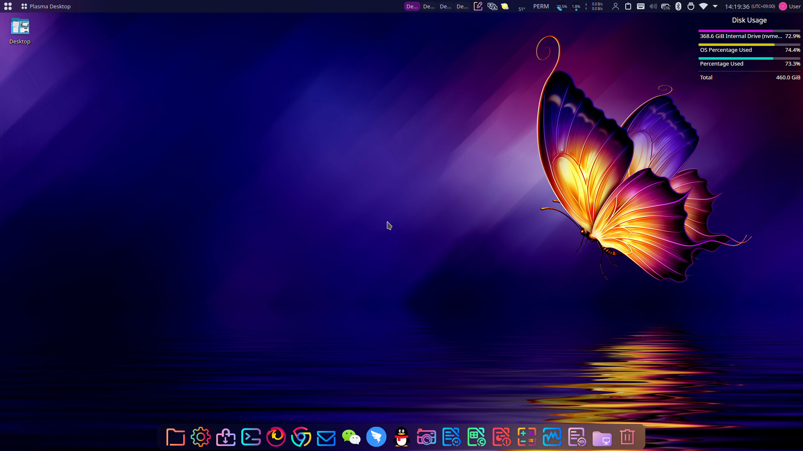
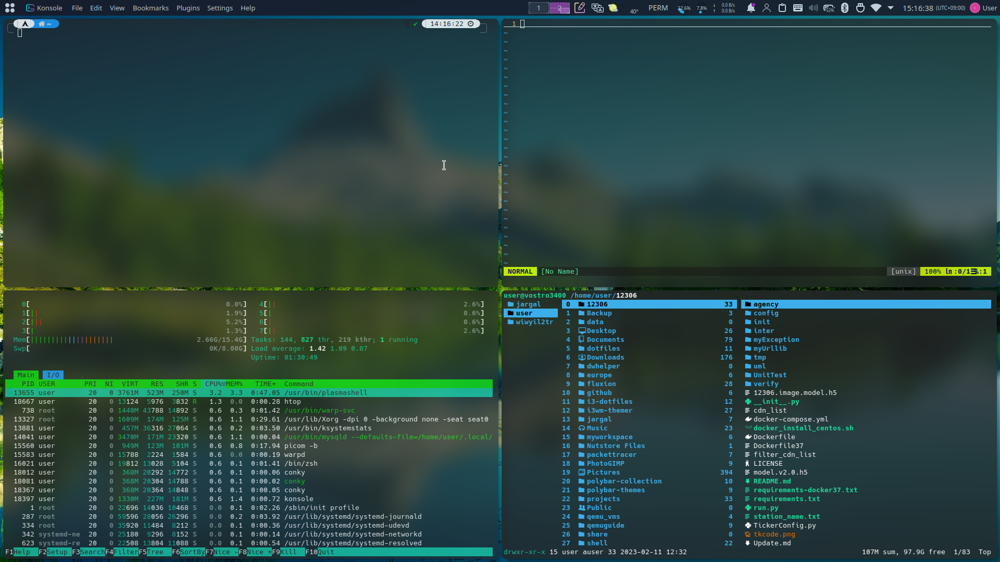

|
Jargal LinuxA user-friendly Linux Distribution
|
Jargal Linux is a user-friendly Linux distribution based on Arch Linux. It contained various softwares and a beautiful interface to make Linux easy to use. Jargal Linux can be used in many fields. It has a lot of softwares from both arch repository and AUR. It is easy to install with Calamares installer which has a Graphic and user-friendly interface. 
|